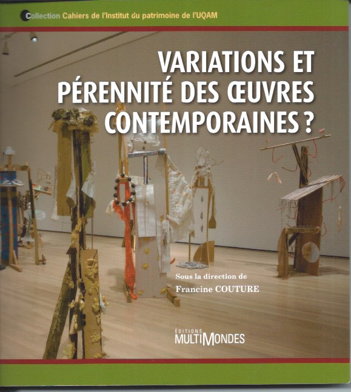
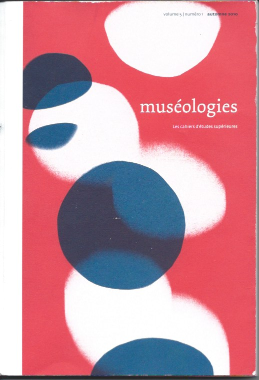

Réexposition, variabilité et pérennité des oeuvres contemporaines
L’étude des conditions de mise en vue d’œuvres contemporaines avait pour objectif d’analyser le rôle d’intermédiaire joué par l’exposition sur la présentation publique des œuvres. Afin de réaliser ce projet de recherche, j’ai formé un groupe de recherche dont les membres étaient réunis par un même objet d’étude : les conditions de réexposition d’œuvres contemporaines ayant un potentiel de variation. Ont fait partie de ce groupe, Anne Bénichou, professeure au département des arts visuels de l’UQAM, Richard Gagnier, chef du département de restauration au Musée des beaux-arts de Montréal et Véronique Rodriguez, professeure au CEGEP d’Ahuntsic. Les résultats de cette recherche ont été publiés dans Variations et pérennité des œuvres contemporaines ? sous la direction de Francine Couture, Editions Multimondes (1).
On a relevé que les variations étudiées résultaient de plusieurs facteurs : l’identité conceptuelle de l’œuvre, ses contraintes physiques dues à la fragilité de ses matériaux, l’obsolescence de ses composantes technologiques, la configuration de son lieu d’exposition et la reformulation de l’intention de l’artiste au moment de sa réexposition. Comment l’action de ces différents facteurs détermine l’état de l’œuvre exposée ?
La formulation de cette question a été inspirée par le cadre théorique du sociologue de la musique Antoine Hennion qui a démontré que le contexte d’apparition publique d’une œuvre musicale résulte de la conjugaison de l’action de divers intermédiaires tant matériels qu’humains, dont l’interprète, la partition, l’instrument de musique et le lieu et le dispositif d’écoute d’une pièce musicale (2). Cette approche se situe en continuité des travaux du sociologue des sciences de Bruno Latour qui, afin de souligner le caractère collectif de la production d’un fait scientifique, a démontré qu’il se forme dans le contexte d’une chaîne hétérogène d’intermédiaires regroupant des personnes, des objets techniques, des lieux et des réseaux qui se développent dans des lieux et des temps donnés (3).
Guidée par cette approche théorique, les membres de l’équipe ont formulé l’hypothèse de recherche suivante : l’état de l’œuvre offerte à l’expérience esthétique du public résulte non seulement de la variation de ses composantes, mais également de la collaboration et des transactions entre les acteurs impliqués dans son apparition publique, tels que les artistes, commissaires, les conservateurs, les restaurateurs. Cette hypothèse avait pour objectif de démontrer que sa production ne s’est pas arrêtée pas dans l’atelier de l’artiste, mais qu’elle a continué d’être produite à chacune de ses occurrences ou de ses réexpositions.
L’essai théorique de Gérard Genette sur ce qu’il a dénommé l’immanence plurielle d’œuvres d’art nous a permis de classer et de concevoir une typologie des diverses manifestations des variations des œuvres observées (4). Pour reprendre les termes de Genette celles-ci ont donné lieu à des objets qui n’étaient pas identiques à l’œuvre originale tout en se référant à son identité spécifique. Ces variations se sont manifestées sur divers modes. Les contraintes physiques d’un lieu d’exposition ont entraîné l’adaptation des composantes de l’œuvre à ce lieu ou la présentation d’une version réduite ou fragmentaire. Nous avons également relevé le remaniement de ses composantes par l’artiste qui souhaite les substituer à la première version, la réactualisation d’une œuvre existant sur le mode du document dont les prestations ne sont pas similaires à l’occurrence antérieure, l’exposition d’un des éléments d’une œuvre comme une œuvre autonome. Des interventions ont également le remaniement de ses composantes par l’artiste qui souhaite les substituer à la première version, la réactualisation d’une œuvre existant sur le mode du document et dont les prestations ne sont pas similaires à l’occurrence antérieure. Nous avons également relevé des variations qui ont modifié le statut d’une œuvre d’art, telle que la production d’un nouvel exemplaire d’une œuvre précédemment considérée comme unique ou le changement d’une œuvre éphémère en œuvre pérenne, ainsi que l’attribution du statut d’œuvre à un document rendant compte de la prestation d’une œuvre performative. Enfin, des variations ont relevé du concept d’œuvre in progress, telle l’œuvre synthèse rassemblant des éléments d’œuvres antérieures ainsi que l’œuvre évolutive prévue par l’artiste.
|  |  |
Les variations des oeuvres de collections muséales ont remis en question leur état originel et les critères attestants de leur intégrité et de leur authenticité.
Variations des œuvres contemporaines de collections muséales
Ma contribution à ce projet de recherche a été l’analyse des pratiques des professionnels/les des musées qui ont eu à composer avec les variations des œuvres de collections muséales, lesquelles remettaient en cause leur état originel et les critères conventionnels attestant de leur intégrité et de leur authenticité (5). Cette étude avait pour objectif de relever les stratégies de leur réexposition ainsi que les modes de collaboration entre les professionnels/les des musées avec les artistes. Mon champ d’études était constitué d’œuvres faisant partie des collections muséales suivantes : le Musée des beaux-arts du Canada, le Musée national des Beaux-arts du Québec, le Musée d’art moderne du Centre Pompidou et le Musée d’art contemporain de Genève (MAMCO).
J’ai étudié cinq cas de figure de variations d’œuvres :
[1] Œuvres acquises sur le mode du document
Les musées ont acquis des œuvres sous forme d’un document ou d’un script dans lequel l’artiste a défini l’identité conceptuelle d’une œuvre en dressant la liste de ses éléments constitutifs et en prescrivant ses conditions de sa prestation. Sa matérialisation doit donc être basée sur la conformité à ce script qui a le statut de certificat. Mon analyse a démontré que l’institution muséale a mis en œuvre différents modes d’articulation de l’aspect conceptuel d’une œuvre énoncé par le script et sa matérialisation. Voici deux cas de figure. Le premier met en évidence le rôle crucial joué par l’artiste qui a imposé à l’institution muséale les modalités d’exposition de son œuvre. Lors de ses réexpositions, les professionnels/les du musée ont respecté les consignes données par l’artiste qui a prévu la variabilité de la matérialisation de l’œuvre en déléguant au collectionneur le choix de ses éléments constitutifs. (Claude Rutault, Toiles à l’unité1973/Légendes 1985. Musée d’art moderne (Centre Georges Pompidou). Autre cas de figure. Le musée a exercé son autorité en désignant l’itération d’une œuvre au moment de son acquisition comme étant l’occurrence de référence devant guider les mises en exposition ultérieures. Le musée n’a pas donc remis en question le principe de fixer les composantes d’un état de l’œuvre dont il doit assurer la pérennité. Pourtant, le document rédigé par l’artiste prescrit que la variabilité de l’œuvre doive résulter de son adaptation aux contraintes physiques du lieu de son exposition. Le musée n’a pas suivi cette consigne. Cela a contribué à réduire la variabilité de l’œuvre. (Don Flavin, The Nominal Three (to William of Ockam) de Don Flavin, Musée des beaux-arts du Canada).
[2] Le remaniement des éléments constitutifs d’une œuvre
Le remaniement d’éléments constitutifs d’œuvres de collections muséales a mis le musée devant ce dilemme : doit-il fonder ses pratiques sur le principe de la conservation de l’intégrité originelle de l’œuvre attestée par la documentation descriptive de ses composantes ou être ouvert à la conception de sa temporalité incluant ses réexpositions comme des moments de sa production ? Deux études de cas de figure démontrent différentes réponses à cette question. L’artiste et les professionnels du musée ont considéré les remaniements d’éléments d’une œuvre, lors de ses réexpositions, comme de nouvelles étapes de son processus de création. (Alain Paiement, Parages et Louise Viger, d’Autodafé, Musée national des beaux-arts de Québec). Autre cas de figure de remaniements d’œuvres qui a eu plusieurs années après leur acquisition. Des artistes ont produit une nouvelle version d’une œuvre en remaniant ses composantes originelles et ont demandé à l’institution muséale de substituer cette version remaniée à l’état de l’œuvre acquise. Cette demande a heurté le principe de sa conservation axé sur la préservation de son intégrité conceptuelle et matérielle originelle. Néanmoins, les conservateurs ont procédé à des transactions avec les artistes et ils ont acquiescé à leurs demandes, tout en conservant la documentation décrivant les composantes de l’œuvre au moment de son acquisition. (Jana Sterbak, I want You Feel the Way, Michael Snow, The Sides to Every Story, de Claes Oldenburg, Bedroom ensemble, Musée des beaux-arts du Canada).
[3] Production d’un nouvel exemplaire d’une œuvre
Quel statut le musée accorde-t-il à un nouvel exemplaire d’une œuvre acquise en tant qu’œuvre unique ? Est-ce une nouvelle œuvre originale, une réplique, une copie de voyage ? J’ai observé trois stratégies muséales qui ont mis en évidence l’imprécision des protocoles muséaux établissant l’identité d’un deuxième exemplaire par rapport à l’œuvre originelle. Cette analyse a également révélé que sa validation s’appuie sur des négociations entre le musée et l’artiste ou ses représentants dont l’enjeu est l’exercice de leur autorité respective sur les œuvres concernées. Un premier de cas de figure. L’artiste a réalisé un nouvel exemplaire d’une œuvre après qu’elle ait été amputée de nombreux éléments lors d’une exposition. Il a apporté des modifications à ses composantes matérielles. (Robert Morris, Untitled (1967-1968) Musée des beaux-arts du Canada). Afin de préserver la valeur de rareté du premier exemplaire et son statut de référence à l’acte originel de sa création, le musée a installé une hiérarchie entre les deux objets. Le musée a autorisé l’exposition de la version lacunaire de l’œuvre que dans ses murs et celle du deuxième exemplaire dans des lieux à l’extérieur du musée. Il a interdit la présentation simultanée des deux exemplaires pour préserver l’unicité de l’état de l’œuvre originel. Cette stratégie fut également utilisée par le MNAM (Paris) dans le cas de Salle blanche (1975) de Marcel Broodthaers dont le principe de sa refrabiquation définit l’identité conceptuelle l’œuvre. La spécificité de ce cas réside dans le fait qu’il a provoqué une discussion entre le musée et l’ayant droit de l’artiste, Marie Glisser-Broodthaers, qui a autorisé la production d’un deuxième exemplaire de l’œuvre destiné à être exposé hors les murs du musée. Le musée a exercé son autorité institutionnelle en lui attribuant le statut de copie de voyage afin de préserver l’unicité de l’exemplaire originel acquis et il a exigé que les deux exemplaires ne soient exposés en même temps. Voici un autre cas de transaction de l’institut muséal avec l’ayant droit qui a exercé son pouvoir de modifier l’identité spécifique d’une œuvre d’art. (Gordon Matta-Clark, Open House (1972, 1985) MAMCO). Open House a été conçu comme non pérenne dont les refabrications sont éphémères et adaptées aux sites de présentation. Son identité spécifique a été modifiée en une œuvre pérenne lorsqu’un exemplaire de l’œuvre a été acheté par un collectionneur qui en a fait don au MAMCO. Le Gordon Matta-Clark Trust a alors considéré qu’il y a deux modes de manifestation de l’œuvre : celui de l’œuvre éphémère fabriquée dans le cadre d’une exposition temporaire et celui de l’œuvre pérenne exposée dans une salle du musée. Le MAMCO lui a attribué deux dates de production : 1972, date de sa première occurrence et 1985, date de sa transformation en objet d’art pérenne. Un dernier cas de figure. Celui de la production d’une nouvelle version d’une œuvre par l’ajout d’éléments tirée d’une œuvre antérieure. Le musée a reconnu à l’artiste l’exercice de son droit d’auteur l’autorisant à créer une nouvelle version de l’œuvre et il a considéré qu’elle constitue une nouvelle œuvre originale, laquelle appartient à l’artiste. (Nam June Paik Moon Is the Oldest TV, MNAM).
[4] La version réduite
La version réduite résulte du retrait d’éléments de l’œuvre pour qu’elle soit adaptée aux contraintes physiques de son lieu d’exposition. Avec l’approbation de l’artiste, cette variation ne remet pas en cause l’état originel de l’œuvre acquise par le musée. (Arnaud Maggs, Notification xiii (date ?) Musée des beaux-arts du Canada).
[5] Présentation d’un élément d’une œuvre, œuvre autonome ?
Ce cas de figure est celui de l’exposition de deux exemplaires non identiques d’une œuvre auxquels l’artiste a attribué tantôt l’identité d’une œuvre autonome, tantôt celle d’un élément d’un ensemble. Cette manipulation artistique est illustrée par une réexposition de Les Piques d’Annette Messager. La Tate Gallery et le Musée national d’art moderne à Paris avaient acquis chacun un exemplaire de cette œuvre dont les composantes diffèrent, et qui était considéré par l’artiste et le musée comme des œuvres autonomes. Par ailleurs, lors de réexpositions de Les Piques, Annette Messager a actualisé la variabilité de l’œuvre en rassemblant les deux exemplaires de l’œuvre afin de former un grand ensemble.
Mon étude a démontré que les variations des œuvres ont amorcé une période d’expérimentations de nouveaux modes d’apparition des œuvres contemporaines. Les professionnels/les des musées ont ajusté leurs pratiques en fonction de la variabilité des œuvres de leurs collections. Tout en exerçant leur expertise muséale visant à assurer la stabilité et la pérennité de leurs composantes matérielles et conceptuelles, leurs stratégies de conservation démontrent leur ouverture à l’idée que l’état de l’œuvre variable n’est pas définitivement fixé et qu’elle se transforme au fil de ses expositions.
Références
- Variations et pérennité des œuvres contemporaines ? sous la direction de Francine Couture, Montréal, Éditions Multimondes, 2013.
- Antoine Hennion, La passion musicale, une sociologie de la médiation, Paris, Metailié, 1993.
- Bruno Latour, La science en action, introduction à la sociologie des science, Paris, Éditions de la Découverte, 1989.
- Gérard Genette, L’œuvre d’art, immanence et transcendance, Paris, Seuil, 1994.
- Francine Couture, « Stratégies muséales et variations d’œuvres contemporaines », Variations et pérennité des œuvres contemporaines ? sous la direction de Francine Couture, Éditions Multimondes, Montréal, 2013, p. 101-136. Francine Couture, « Réexposition pérennité de l’art contemporain » Cultures et Musées, no.16, 2010, p. 137-151. Francine Couture, « Variabilité, identité spécifique et numérique des œuvres contemporaines » Muséologies, vol.5 no 1, automne 2010, p. 138-175. Francine Couture et Richard Gagnier, « Les valeurs de la documentation muséologique : entre l’intégrité et les usages de l’œuvre d’art » Ouvrir le document, sous la direction d’Anne Bénichou, Dijon, Presse du Réel, 2010, p, 323-348. Francine Couture « Mise de cause ou persistance de la pérennité de l’état originel d’une œuvre d’art » Musées et muséologies, au-delà des frontières. Les muséologies nouvelles en question, sous la direction de Daniel Arsenault, Yves Bergeron, Laurence Provencher-St-Pierre, Québec, Les Presses de l’université Laval, 2015, p. 177-192. Francine Couture, « Exposer l’art contemporain. Modifier les manières de faire et les valeurs du musée », L’art vivant et ses institutions, no. 26/2007, p. 29-30.